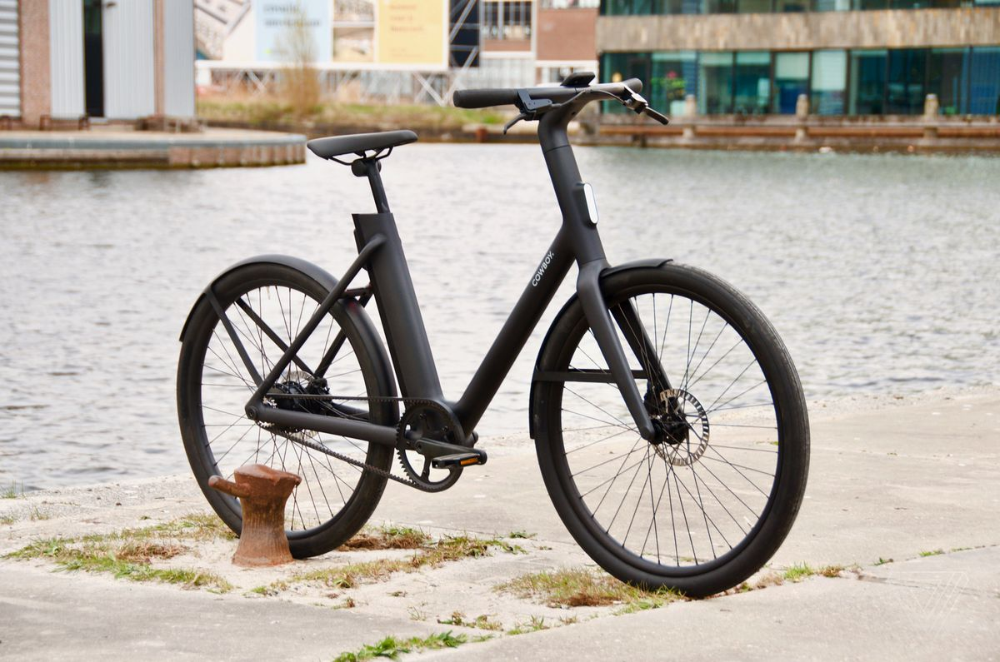
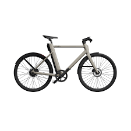
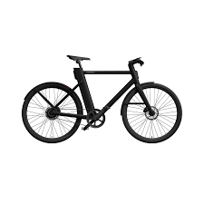

Cuando Cowboy se presentó en 2018 quiso hacerlo lanzando al mercado una bicicleta eléctrica de alta gama a precio asequible cuyo atractivo principal fuese la sencillez de diseño, la fiabilidad, la durabilidad y la tecnología.
La bicicleta eléctrica Cowboy utiliza un diseño elegante que se aparta de la mayoría de los que ofrecen otras marcas del sector
A diferencia de la mayoría de ellas, que usan baterías atornilladas en el tubo inclinado inferior del cuadro o situadas en un trasportín trasero, Cowboy la coloca embebida directamente en el tubo descendente del cuadro. Un diseño patentado por la marca que permite acceder a ella fácilmente, para extraerla y recargarla, o para cambiarla por otra.
En esta posición el aspecto de la bicicleta es muy diferente al de la competencia, ya que traslada el peso de la batería al mismo lugar que el del ciclista, aumentando la sensación de seguridad y reduciendo las inercias que provocan las baterías inclinadas.

MODELOS
C4 Dream machine
C4 ST
C3 ST


Batería de 360 WH
Batería de 360 WH
Batería de 360WH
Peso:18,9kg
Peso de 19,2Kg
PESO 18,2Kg
Autonomía para 70km
Autonomía para 70km
Autonomía para 70km
Motor torque de 45Nm
Motor torque de 45Nm
Motor torque de 30Nm
carga wireless
carga wireless
-
Ancho neumáticos 47mm
Ancho neumáticos 47mm
Ancho neumáticos 42mm
Precio:2790
Precio:2790
Precio:2390
Principales diferencias
Bicicletas eléctricas
COWBOY
.Autonomía de la batería entre 30km y 50 km
Autonomía de la batería entre 50km y 90km
Batería situada en la parte posterior del sillín o atornilladas al tubo inferior del marco
Batería situada en el tubo descendente del cuadro, lo que ayuda a extraerla facilmente y facilita su carga
Diseños poco atractivos que pueden llegar a ser pesados e incomodos
Diseños modernos con materiales de calidad cuidando el peso en todas sus bicicletas